Policy inputs
At D30 the agent is in the bedroom. The new image goal retrieves scene context for a microwave it saw earlier in the same episode.
What do embodied agents call for in a 3D visual harness?
To unleash the capabilities of existing vision–language models (VLMs) for embodied decision-making, we present EmbodiedBrain, a 3D visual harness that combines a model-managed memory bank, a flexible joint action space and pluggable task interfaces.
The memory bank retains task-relevant information, including progress records, object locations, visual evidence and scene knowledge, while stored locations are visualized on bird's-eye views (BEV) alongside scene geometry and interaction history. Through joint action space, the model actively manages the memory bank and selects navigation targets by pointing in overhead view or BEV. Moreover, pluggable task interfaces then translate model actions into task-specific operations, adapting EmbodiedBrain to multiple embodied tasks.
Experiments across vision-and-language navigation, object-goal navigation, lifelong tasks, embodied question answering and interaction tasks show competitive results without task-specific policy fine-tuning. Deployment on a Unitree G1 further validates EmbodiedBrain's effectiveness on a real-world long-horizon task requiring planning and memory. Further analyses offer insights into the design principles underlying its effectiveness. Code will be released.

A frozen VLM reads aligned observations and selected memory, then jointly chooses an environment action and any memory edits. The shared 3D workspace lets the model act on what it has remembered.
At D30 the agent is in the bedroom. The new image goal retrieves scene context for a microwave it saw earlier in the same episode.
The model uses the remembered microwave as a landmark and selects a navigable point on the occupancy BEV.
The controller reaches the waypoint. The next policy call receives a new observation and the navigation outcome.
Find the remembered microwave
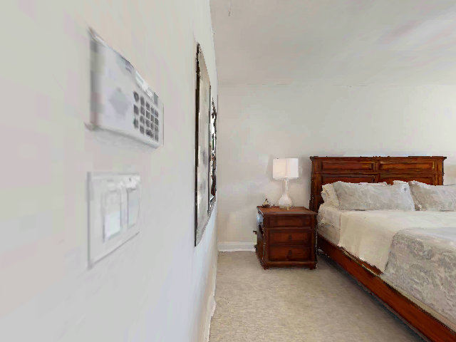
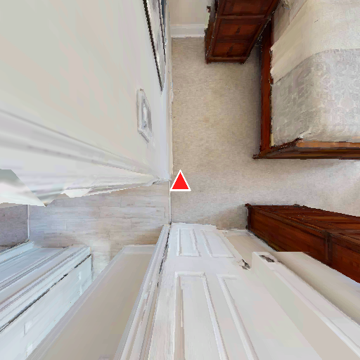
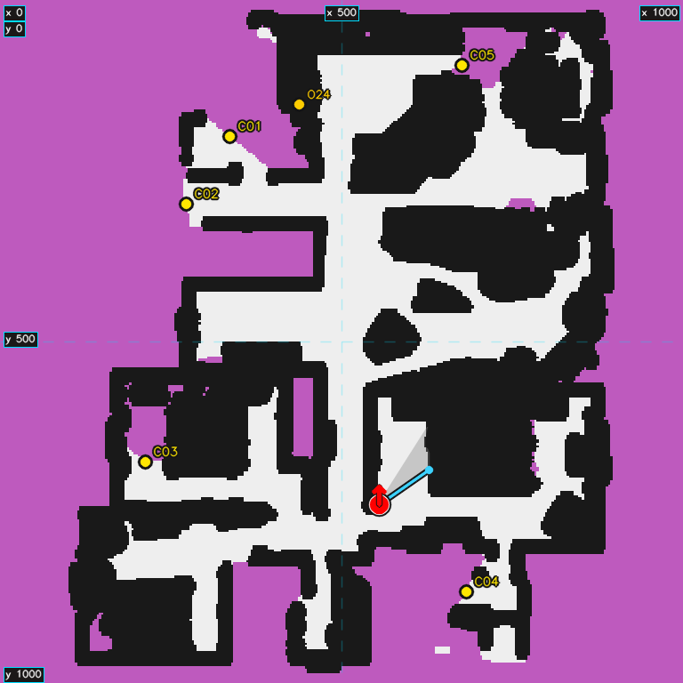
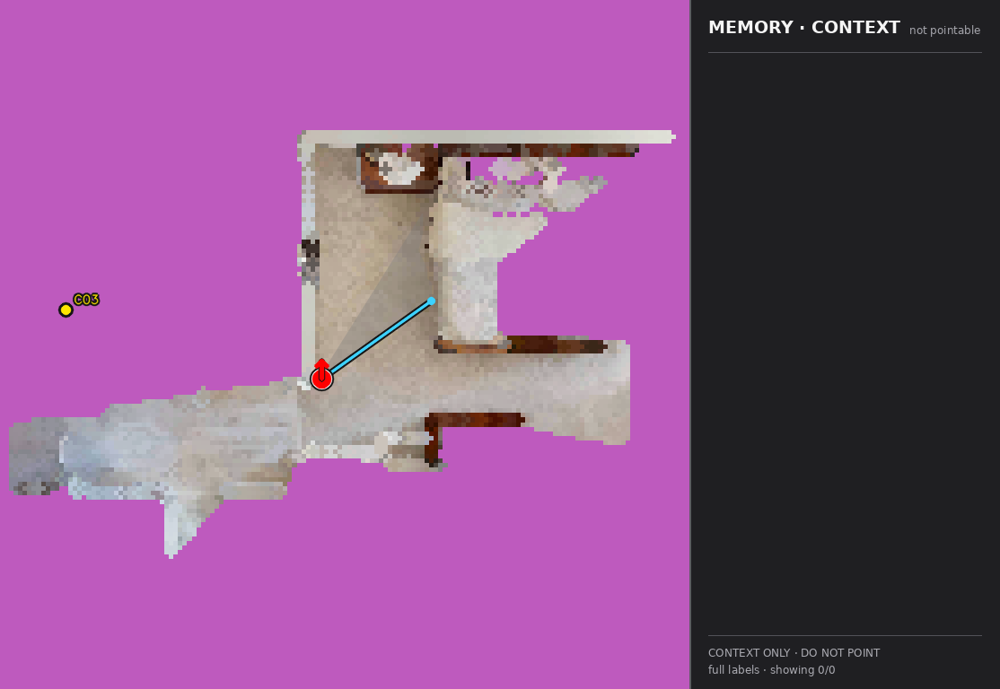
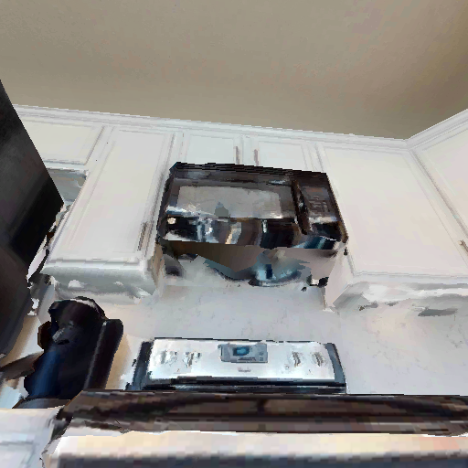
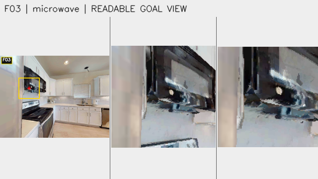
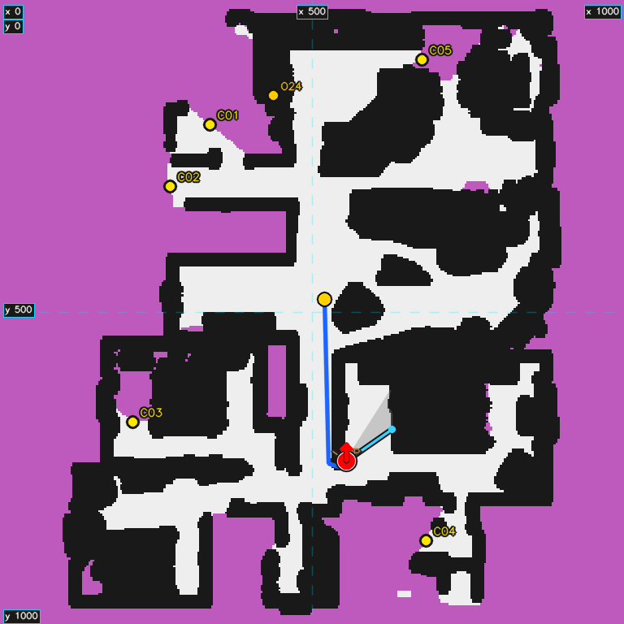
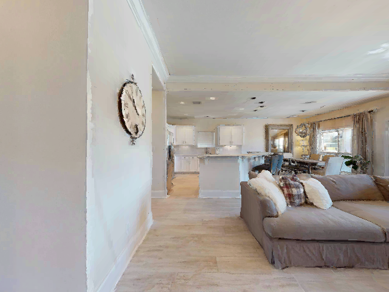
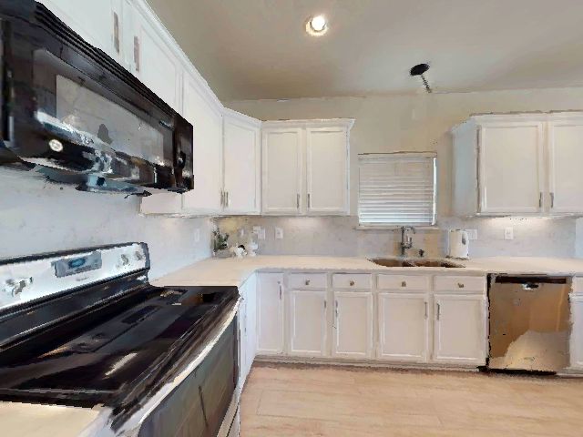
These views, the point selection and the feedback come from the same recorded GOAT-Bench episode.
See lifelong-task replaysObservations and actions refer to the same 3D environment. A frozen VLM reads the current POV and spatial views, uses selected evidence and progress records, and chooses an environment action together with any memory edits.
Memory edits precede execution. Navigation targets are grounded to world coordinates and handled by a controller. Task adapters handle interaction, answering, and other environment-specific operations. New observations then update the next decision's context.
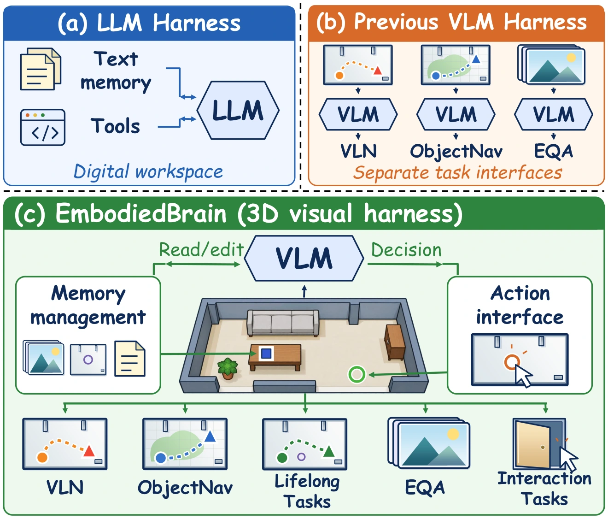
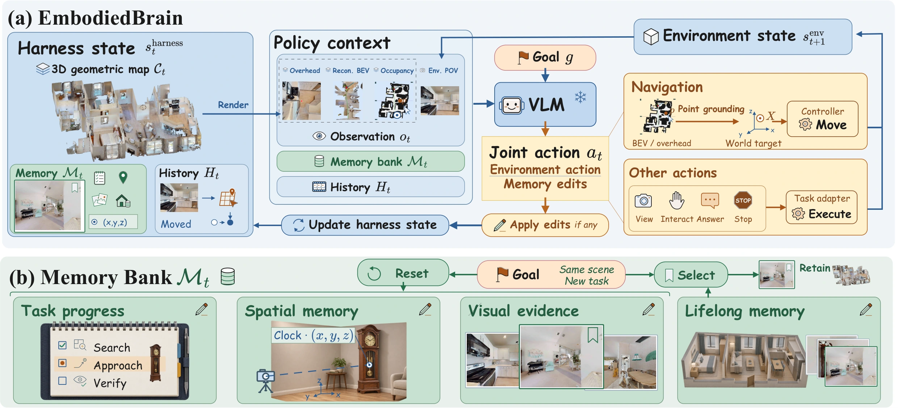
We compare EmbodiedBrain with published methods across five embodied task families. EmbodiedEval reports navigation, question answering, and interaction under a shared evaluation.
The RGB BEV shows a fixed-orientation reconstruction for the replay, with the recorded agent pose and traveled path. Updates follow the available pose samples. Decision-sampled demos update at recorded decisions and show the last confirmed pose between samples.
The recorded occupancy BEV or overhead view shows the actual source of the model’s selected point. The BEV point counts below are logged requests. The traveled path follows execution feedback.
Bold marks the best reported result and underline marks the second best. Swipe wide tables to see more columns.
| Method | R2R-CE | RxR-CE | ||
|---|---|---|---|---|
| SR ↑ | SPL ↑ | SR ↑ | SPL ↑ | |
| Training-based methods | ||||
| Uni-NaVid | 47.0 | 42.7 | 48.7 | 40.9 |
| NaVILA | 54.0 | 49.0 | 49.3 | 44.0 |
| JanusVLN | 60.5 | 56.8 | 56.2 | 47.5 |
| NavFoM | 61.7 | 55.3 | 64.4 | 56.2 |
| DualVLN | 64.3 | 58.5 | 61.4 | 51.8 |
| OmniNav | 69.5 | 66.1 | 73.6 | 62.0 |
| QwenNav-4B | 69.5 | 63.6 | 75.2 | 65.0 |
| QwenNav-8B | 72.1 | 66.6 | 76.5 | 65.7 |
| Zero-shot methods | ||||
| Open-Nav† | 32.0 | 27.7 | — | — |
| EvoNav† | 43.0 | 37.8 | — | — |
| SmartWay† | 44.0 | 35.0 | — | — |
| AgenticNav† | 55.0 | 48.4 | — | — |
| HarnessVLN† | 58.0 | 35.8 | 51.4 | 38.1 |
| Minimal agent† | 78.0 | 65.3 | — | — |
| EmbodiedBrain†‡ (ours) | 81.0 | 70.2 | 81.0 | 62.8 |
Two BEV waypoint requests carry the agent alongside the pool toward the bar.
Open full-size videoUse the large painting as a landmark and continue through the doorway.
Open full-size videoFollow a language guide across floors, with the map and action source updated at recorded decisions.
Open full-size videoFollow the instruction past the wine room, using BEV and overhead navigation points.
Open full-size videoThe agent follows a route instruction and selects two waypoints through the BEV.
Open full-size video| Method | SR ↑ | SPL ↑ |
|---|---|---|
| Modular GOAT | 24.9 | 17.2 |
| VLMnav | 20.1 | 9.6 |
| DyNaVLM | 25.5 | 10.2 |
| TANGO | 32.1 | 16.5 |
| MTU3D | 47.2 | 27.7 |
| 3D-Mem | 42.6 | 22.8 |
| EvoMemNav | 59.6 | 38.9 |
| MSGNav | 62.4 | — |
| EmbodiedBrain (ours) | 66.5 | 46.1 |
The current image goal retrieves an earlier observation. The remembered location and actual waypoint remain distinct.
Open full-size videoUse selected prior scene information when the goal changes.
Open full-size videoCarry forward a known location while following a later goal.
Open full-size videoUse scene knowledge gathered under earlier goals to guide a later search.
Open full-size videoRetrieve scene information relevant to the new target.
Open full-size video| Method | HM-EQA | MT-HM3D | EXPRESS | |||
|---|---|---|---|---|---|---|
| Acc. ↑ | Steps ↓ | Acc. ↑ | Steps ↓ | C⋆ ↑ | Epath ↑ | |
| Explore-EQA | 58.4 | 0.52 | 36.2 | 0.64 | — | — |
| GraphEQA | 63.5 | 0.20 | 45.6 | 0.45 | — | — |
| MemoryEQA | 61.4 | 0.40 | 43.1 | 0.41 | — | — |
| Fine-EQA | 56.0 | 0.54 | — | — | 63.95 | 25.58 |
| 3D-Mem | 50.4 | 0.63 | — | — | — | — |
| FAST-EQA | 69.2 | 0.65 | 50.5 | 0.52 | 68.70 | 29.25 |
| QwenNav-8B† | 74.1 | 0.17 | 52.1 | 0.22 | 77.66 | 31.73 |
| EmbodiedBrain (ours) | 77.6 | 0.20 | 53.8 | 0.24 | 78.81 | 40.27 |
The agent searches for evidence across the room, then answers using the observed bed and blanket.
Open full-size videoGather spatial evidence to answer whether the objects are in the same room.
Open full-size videoThe agent uses BEV points to gather views that support its answer about the fruit.
Open full-size videoMove to gather evidence that resolves the count.
Open full-size videoMove around the kitchen island to gather another view of the lights.
Open full-size videoAt D27, the model saves paired POV and overhead views of the rack as m09. The views return in the model inputs at D28 and D29. At D29, the model submits the correct answer, C · Three, and successfully deletes m09 in the same decision.
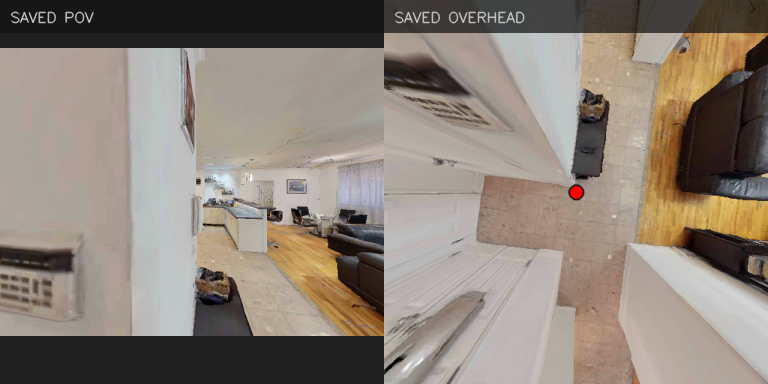
m09| Method | AI2-THOR SR ↑ | ProcTHOR SR ↑ |
|---|---|---|
| Gemini-3.1-Pro | 6.4 | 5.5 |
| Qwen-3.5-397B-A17B | 16.7 | 0.0 |
| Qwen3.8-27B | 9.3 | 2.4 |
| GPT-5 | 16.1 | 0.0 |
| GPT-6.1-Sol | 76.8 | 57.5 |
| EmbodiedBrain (ours) | 86.1 | 64.6 |
Record the bedroom, carry the vase, and use the recorded action views to complete delivery.
Open full-size videoTrack a multi-stage goal involving an object and a change to the environment.
Open full-size videoFollow the recorded interaction sequence across rooms.
Open full-size videoWrite a bedside annotation, pick up the tomato, and use the stored location on the return.
Open full-size videoThe replay shows the original observations and how actions change the state of the egg and stove.
Open full-size videoEmbodiedBrain uses Qwen3.8-27B in this comparison.
| Method | EQA | Navigation | Interaction | Overall | |||
|---|---|---|---|---|---|---|---|
| SR ↑ | SR ↑ | GcS ↑ | SR ↑ | GcS ↑ | SR ↑ | GcS ↑ | |
| GPT-4o | 34.69 | 31.03 | 42.53 | 10.57 | 24.93 | 25.00 | 32.42 |
| Gemini-Pro-1.5 | 21.09 | 17.24 | 25.86 | 4.87 | 13.96 | 14.33 | 19.26 |
| SEEA-R1 | 31.50 | 21.05 | — | 5.06 | — | 19.88 | — |
| EmbodiedBrain (ours) | 61.90 | 58.62 | 65.52 | 43.90 | 57.72 | 54.57 | 61.13 |
The observation interface puts four complementary views in the same spatial workspace. The current POV shows what is visible from the agent’s position. The geometric map supplies the local overhead view, the occupancy BEV for global layout, and the RGB reconstruction BEV for colored scene context.
The BEV places policy annotations and grounded evidence alongside the past trajectory, previous camera position, and exploration candidates. In the newspaper task below, both runs see the sink. The full harness enters the bathroom while the run without BEV stops outside.
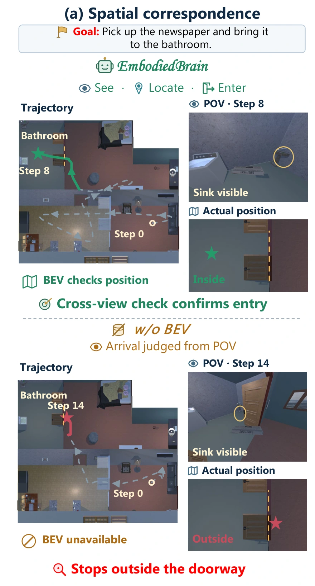
| (a) Input views | ||
|---|---|---|
| Setting | SR ↑ | Δ (pp) |
| EmbodiedBrain (ours) | 64.6 | — |
| w/o BEV input | 48.0 | −16.5 |
| w/o overhead input | 49.6 | −15.0 |
| (b) BEV context overlays | ||
| w/o exploration candidates | 55.9 | −8.7 |
| w/o past trajectory | 56.7 | −7.9 |
| w/o previous position | 57.5 | −7.1 |
Finding On ProcTHOR, removing either the BEV input or the overhead input reduces success more than removing any of the three tested BEV overlays. The results support combining geometry at both scales with interaction context.
Within a task, the model revises its progress, edits its own spatial annotations, and chooses which visual evidence to save or delete. Spatial memory also includes grounded evidence groups from an auxiliary model. Saved views retain detail that a location and description alone cannot capture.
When the goal changes within the same scene, the harness resets these three task-local stores and retains the geometric map and lifelong scene memory. The policy selects relevant region and object records for each new goal.
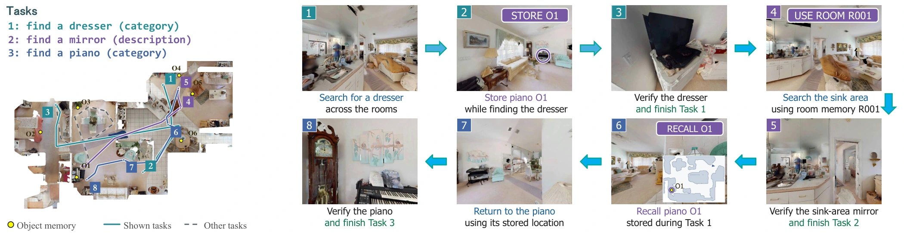
While looking for the dresser, the agent stores the piano’s location as O1.
The mirror goal uses room memory R001 to guide the search to the sink area.
When the goal changes to the piano, the agent recalls O1 from the first task and returns to its stored location.
| (a) Spatial memory (ProcTHOR) | ||
|---|---|---|
| Setting | SR ↑ | Δ (pp) |
| EmbodiedBrain (ours) | 64.6 | — |
| w/o grounded evidence groups | 59.1 | −5.5 |
| w/o policy annotations | 56.7 | −7.9 |
| w/o both spatial memory sources | 52.8 | −11.8 |
| (b) Task-progress memory (R2R-CE) | |||
|---|---|---|---|
| Setting | SR ↑ | SPL ↑ | nDTW ↑ |
| EmbodiedBrain (ours) | 81.0 | 70.2 | 51.7 |
| w/o task progress | 73.0 | 63.2 | 47.9 |
| (c) Visual evidence memory (HM-EQA) | ||
|---|---|---|
| Setting | Acc. ↑ | Δ (pp) |
| EmbodiedBrain (ours) | 77.6 | — |
| w/o visual evidence memory | 73.8 | −3.8 |
| (d) Lifelong scene memory (GOAT-Bench) | ||
|---|---|---|
| Setting | SR ↑ | SPL ↑ |
| EmbodiedBrain (ours) | 66.5 | 46.1 |
| w/o scene memory | 59.4 | 40.0 |
| (e) Text memory (ProcTHOR) | ||
|---|---|---|
| Setting | SR ↑ | Δ (pp) |
| EmbodiedBrain (ours) | 64.6 | — |
| Text memory | 52.8 | −11.8 |
Finding The removed components are tested on their corresponding benchmarks. The two spatial memory sources support ProcTHOR interaction, task progress supports R2R-CE, visual evidence supports HM-EQA, and scene memory supports GOAT-Bench. Group (e) compares the full harness with a separate text-memory configuration on ProcTHOR.
Write a policy annotation. The model can point on POV, occupancy BEV, or overhead and attach a description. The harness stores the resulting 3D location as a memory anchor.
Select a navigation destination. The model points to a destination on occupancy BEV or overhead. The harness grounds the point in 3D, then the controller checks traversability, plans, and executes the route. The candle-delivery comparison below illustrates this execution path.
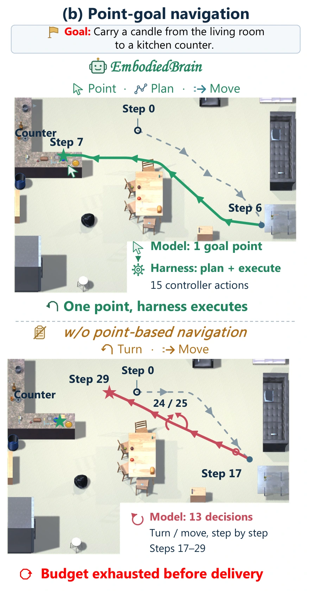
The model selects one goal point for the move from Step 6 to Step 7.
The harness plans and executes the highlighted route in 15 controller actions.
Without point-based navigation. The model makes 13 turn or move decisions in this segment and runs out of budget before delivery.
| (a) Annotation view | ||
|---|---|---|
| Setting | SR ↑ | Δ (pp) |
| EmbodiedBrain (ours) | 64.6 | — |
| BEV | 62.2 | −2.4 |
| POV | 59.8 | −4.7 |
| Overhead | 57.5 | −7.1 |
| (b) Navigation | ||
| Setting | SR ↑ | Δ (pp) |
| EmbodiedBrain (ours) | 64.6 | — |
| BEV pointing | 53.5 | −11.0 |
| Overhead pointing | 48.8 | −15.8 |
| POV pointing | 44.1 | −20.5 |
| Discrete action commands | 22.8 | −41.7 |
Finding Group (a) fixes navigation and varies the source view for policy annotations. BEV is the strongest single annotation view, and the full interface scores higher. Group (b) fixes observation and varies the navigation output. Each tested point-based option outperforms discrete commands, with the full interface scoring highest.
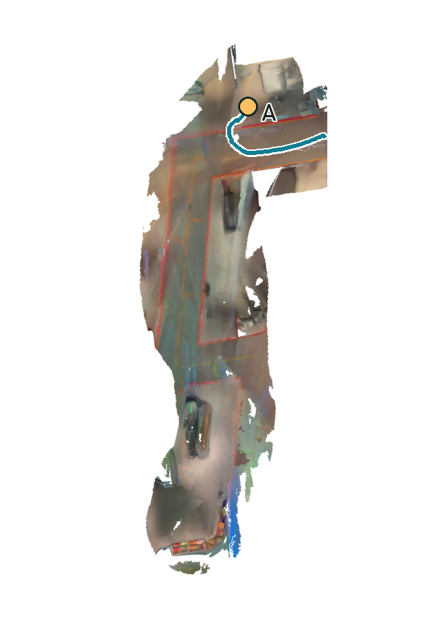
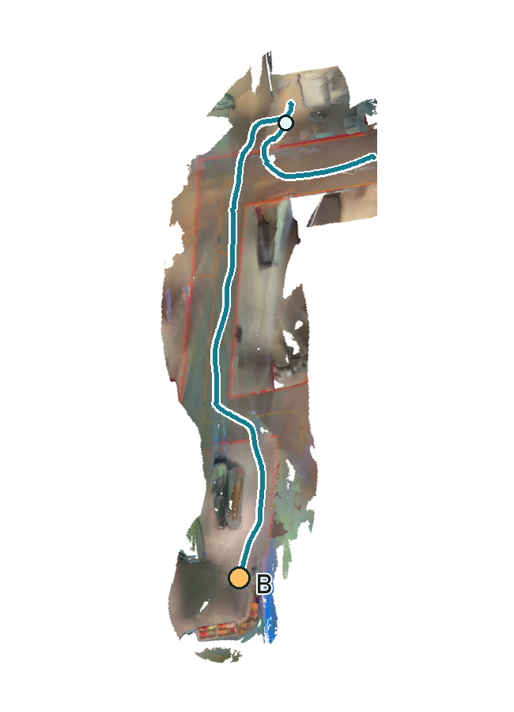
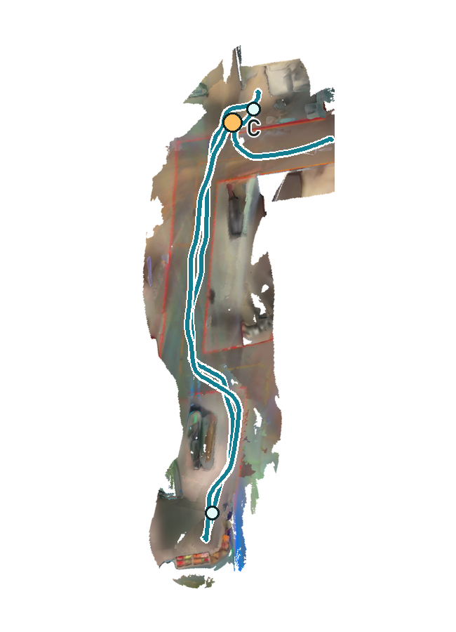
Stage-aligned replay
Offline LiDAR trace registered to RGB reconstruction.
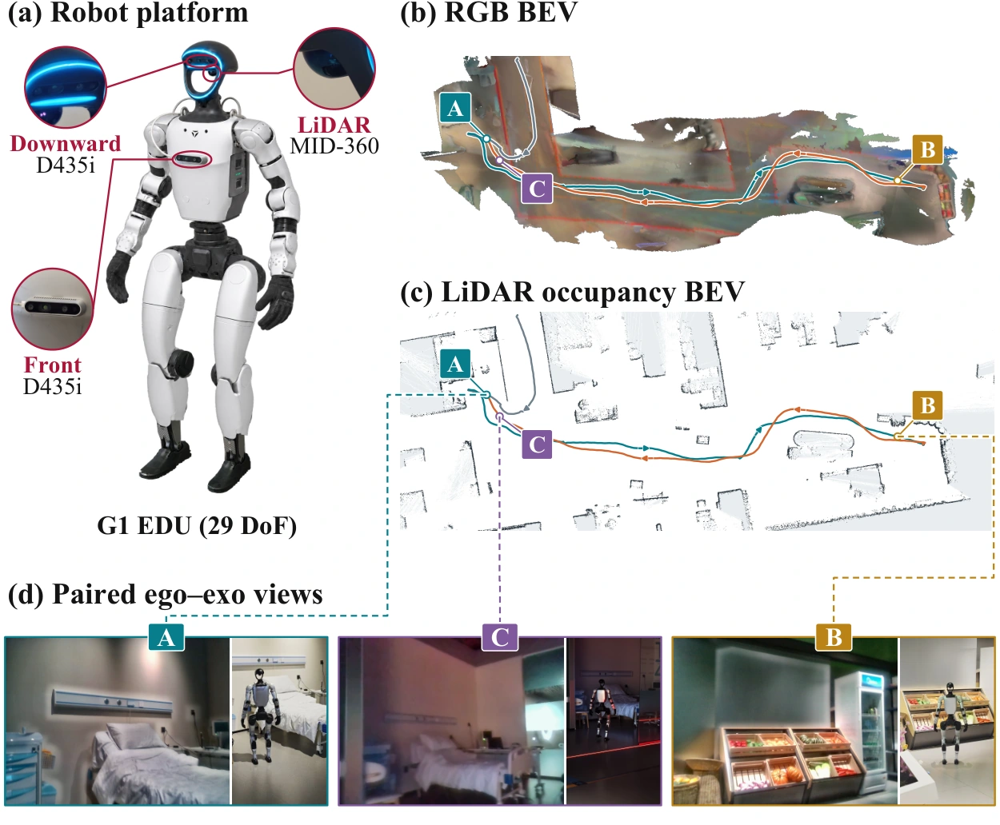
The capability pairs illustrate spatial correspondence, goal-directed navigation, spatial working memory, cross-task target localization, and progress-guided route correction.
Target grounding and navigation or planning accounted for 74.4% of the sampled failures. The analysis sampled 40 failures from each of four task groups with Qwen3.8-27B. Interaction also had a substantial final-execution component.
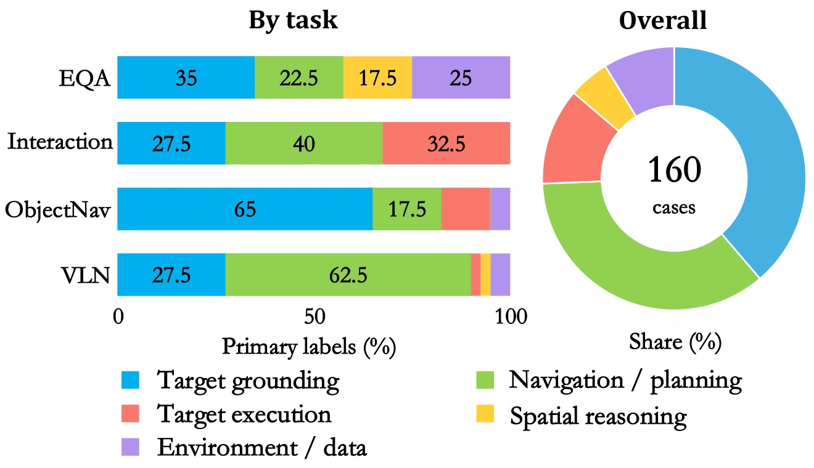
Preprint links and BibTeX will be added when available.